1 Introduccion al Tutorial
Bienvenidos todos a este tutorial de instalacion y configuracion de java y apache tomcat.
Vamos a realizar la instalacion del default jdk (version 11), la instalacion de apache tomcat (version 9). Algunas actividades que vamos a realizar en este tutorial son:
-
Limpiar nuestro sistema de java y apache para una instalacion de 0.
Limpiar las variables javahome y catalinahome.
-
Desintalar la version de java que tengamos instalada.
-
Desintalar la version de apache tomcat que tengamos instalada.
Instalar java y configurar la variable javahome.
Instalar apache tomcat y configurar catalina home.
-
Configurar apache tomcat para poder ingresar al app manager.
-
Desplegar un archivo .war de ejemplo en apache tomcat.
-
Descargar e instalar la libreria JSTL enlas posibles carpetas de apache tomcat.
-
Reiniciar el container y testear que funcione la app.
2 Limpieza e Instalacion de Java
Como ya dijimos antes vamos a realizar la instalacion de default JDK (version 11), para ello vamos a necesitar verificar si ya tenemos una instalacion previa de java para ello vamos a abrir una terminal en nuestro linux mint 21.1 y a ejecutar los comandos.
$ java --version
$ javac --version
El resultado de este comando en la terminal puede variar ya que podemos, no tener instalado java, instalado default java u tener instalado oracle java. En mi caso:
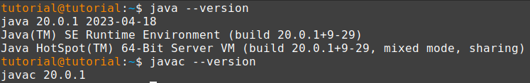Podemos observar que tengo instalado el oracle java jdk. Acontinuacion voy a mostrarte los comandos para poder desintalar el jdk sea oracle java u openjdk.
Un tip util para saber si tenemos java instalado y cuantos tenemos instalados es ejecutar los siguientes comando en la terminal:
$ dpkg -l | grep openjdk
$ sudo update-alternatives --config java
Este comando nos mostrara un menu donde podremos elegir entre los diferentes javas que tengamos instalado, en caso de tener un solo java instalado tambien te lo dira.
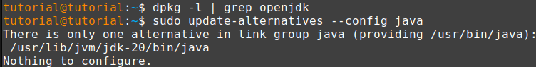En mi caso se puede ver que no tengo instalado openjdk y solo tengo 1 version de java instalada.
3 Desintalacion Oracle JDK
Para desintalar la version oracle java de nuestro linux usaremos los siguientes comandos en la terminal de linux :
(Reemplazar la palabra version con tu version de java. Podes ir a la carpeta donde se encuentra el java y usar ese nombre)
$ sudo update-alternatives --remove "java"
"/usr/lib/jvm/jdk[version]/bin/java"
$ sudo update-alternatives --remove "javac"
"/usr/lib/jvm/jdk[version]/bin/javac"
$ sudo update-alternatives --remove "javaws"
"/usr/lib/jvm/jdk[version]/bin/javaws"
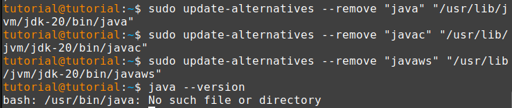
El siguiente paso es eliminar la carpeta JDK correspondiente con el siguiente comando en la terminal de linux:
$ sudo rm -r /usr/lib/jvm/jdk[version]
Ahora podemos volver a verificar si tenemos java instalado es recomendable cerrar y abrir una terminal nueva y ejecutar los siguientes comandos en la terminal:
$ java --version
$ javac --version
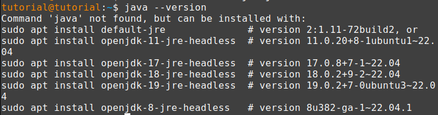
4 Desintalacion openJDK
Para desintalar openJDK vamos a usar el siguiente comando:
$ sudo apt remove --purge openjdk*
Al eliminar java vamos a quedarnos con algunas dependencias que no utilizaremos. Es recomendable "auto-removerlas" a todas ellas usando el manejador de paquetes de linux
$ sudo apt autoremove openjdk*
(No esta demas verificar que la carpeta del java correspondiente se haya eliminado, caso contrario realizar el siguiente comando en la terminal de tu linux)
$ sudo rm -r /usr/lib/jvm/jdk[version]
Como resultado final lo que debemos ver es que cuando ejecutemos el comando java --version nos muestre el siguiente mensaje
5 Limpiando JAVA_HOME
JAVA_HOME es una variable de ambiente, ella tiene el valor del path a nuestra carpeta donde se encuentra java usualmente la llamada bin.
Esta variable es necesaria para aquellas aplicaciones que hagan uso de nuestro java. Si esta es la primera vez que instalas java lo mas probable es que no tengas que hacer este paso, podes omitirlo.
Ahora para poder ver si existe la variable JAVA_HOME podemos ejecutar el siguiente comando
$ echo $JAVA_HOME
el resultado de esto si existe en tu maquina es:
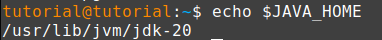Ademas si existe tu JAVA_HOME lo mas probable es que tambien este asociado a tu PATH
$ echo $PATH
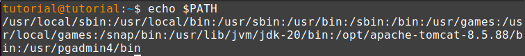
Si observas bien en el segundo renglons de la respuesta esta el path /usr/lib/jvm/jdk-20. No esta de mas limpiar estas variables para tener una instalacion mas limpia.
Existen 3 archivos donde podes encontrar definidas esta variable
-
~/.bashrc : Este archivo tiene comandos que corren cuando iniciamos un nuevo bash shell
-
/etc/environment : Archivo de configuracion que asigna las environment vars a todos los usuarios y procesos.
-
/root/.bashrc : Modifica el archivo .bashrc del usuario root.
Ahora lo que vamos a hacer es abrir los archivos y buscar al final de este donde se encuentre definido JAVA_HOME y lo borraremos, y del PATH tambien. Para ellos vamos a ejecutar los siguiente comandos
$ sudo nano ~/.bashrc
$ sudo nano /etc/environment
Este ultimo es para el usuario root, tenemos que verificar en esos 3 archivos que son los mas comunes.
$ sudo su
$ nano /root/.bashrc
Lo que vamos a estar buscando son lineas similares a la siguiente
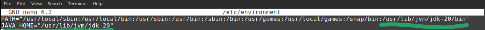Lo que vamos a hacer ahora es borrar JAVA_HOME y tambien quitarlo del PATH.
Ahora finalmente para los 3 archivos que hicimos la modificacion vamos a ejecutar el comando correspondiente:
$ source ~/-bashrc
$ source /etc/environment
$ source /root/.bashrc
Esto lo que hace es aplicar los cambios a la shell que estas usando, si es necesario podes reiniciar la pc o cerrar y abrir otra shell. Bien con esto podemos pasar a la instalacion de java
6 Instalacion Default Java (version 11)
Vamos a empezar con la instalacion de nuestro java llegado a este punto la instalacion es mucho mas sencilla, en una terminal vamos a ejecutar los siguientes comandos:
$ sudo apt-get update
$ sudo apt-get upgrade
$ sudo apt install default-jdk openjdk-11-doc openjdk-11-source
Ahora te voy a explicar que hicimos en esas lineas, las primeras dos son para actualizar e instalar tus repositorios.
Y la ultima linea es la que te instalara nuestro default java version 11, podemos ver que instalamos 3 cosas.
-
default-jdk : Este paquete es un metapaquete que apunta a la versión predeterminada del kit de desarrollo de Java que se recomienda para la distribución. En su caso, dado que está en Linux Mint, esto apuntará a la versión predeterminada de OpenJDK disponible para su versión de Mint.
-
openjdk-11-doc : Este paquete contiene la documentación (documentación de la API de Java) para OpenJDK 11. Puede ser muy útil para hacer referencia a clases, métodos y otros detalles de Java cuando desarrolla aplicaciones.
-
openjdk-11-source : Este paquete contiene el código fuente de OpenJDK 11. Tener el código fuente puede ser útil si desea explorar los aspectos internos de la implementación de OpenJDK o depurar cualquier problema que pueda surgir durante el desarrollo.
Con esto vamos a isntalar el JDK predeterminado con la documentacion y el codigo fuente. Esto puede ser util, auque no es necesario si recien estas comenzando en el desarrollo en java.
7 Actualizar JAVA_HOME
Ya que anterior mente nosotros limpiamos JAVA_HOME ahora vamos a hacer lo contrario, vamos a crearla y asignarle el valor correspondiente para que las applicaciones como apache tomcat puedan hacer uso de ella.
Como imaginas vamos a volver a hacer uso de los 3 archivos que usamos antes para limpiar
-
~/.bashrc : Este archivo tiene comandos que corren cuando iniciamos un nuevo bash shell
-
/etc/environment : Archivo de configuracion que asigna las environment vars a todos los usuarios y procesos.
-
/root/.bashrc : Modifica el archivo .bashrc del usuario root.
Vamos a abrir estos archivos y al final de la linea agregar el JAVA_HOME.
$ sudo nano ~/.bashrc
$ sudo nano /etc/environment
$ sudo su
$ nano /root/.bashrc
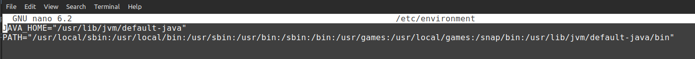
ATENCION CUANDO MODIFICAMOS EN ARCHIVO /etc/environment se escribe como la imagen de arriba pero cuando estamos en los archivos .bashrc se utiliza la siguiente sintaxis
Se utiliza la palabra export (En la imagen trata sobre apache en nuestro caso usaremos JAVA_HOME)
Por ultimo como cuando limpiamos JAVA_HOME aplicamos los cambios.
$ source ~/-bashrc
$ source /etc/environment
$ source /root/.bashrc
8 Limpieza e Instalacion de Apache Tomcat (version 11)
Este ultimo es un poco mas corto para realizar, usualmente apache tomcat se encuentra en la ruta /opt/apache[version]
Aunque es probable que tambien lo tengas instalado en otro lado para ello vamos a ubicarlo utilizando en la terminal de linux el siguiente comando:
$ locate tomcat
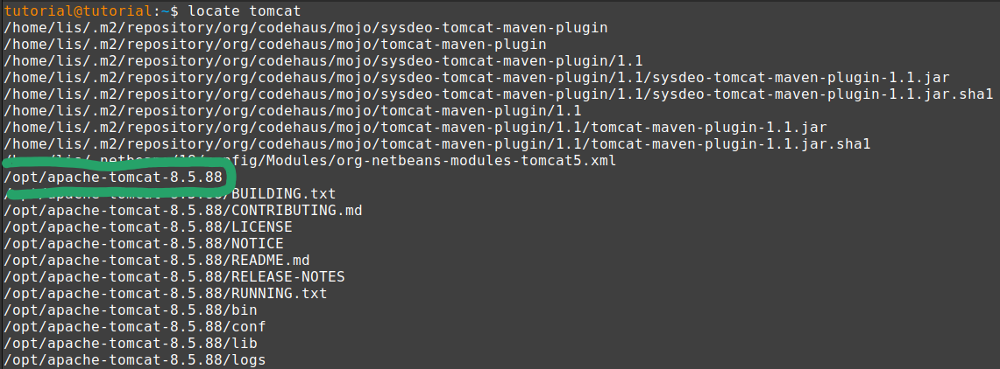
En mi caso se encuentra en la carpeta anterior mente comentada /opt/ y tengo la version de apache tomcat 8.5.88
Para desintalarlo basta con eliminar la carpeta con el siguiente comando:
$ sudo rm -rf /opt/apache-tomcat-8.5.88
Listo con esos pasos ya tenemos desintalado apache tomcat mas adelante veremos que vamos a hacer con la variable de entorno CATALINA_HOME.
9 Instalacion de Apache Tomcat (version 9)
Primero vamos a descargar apache tomcat desde el sitio web oficial en:
Apache TomcatY vamos a seleccionar a la izquierda en Download tomcat 9
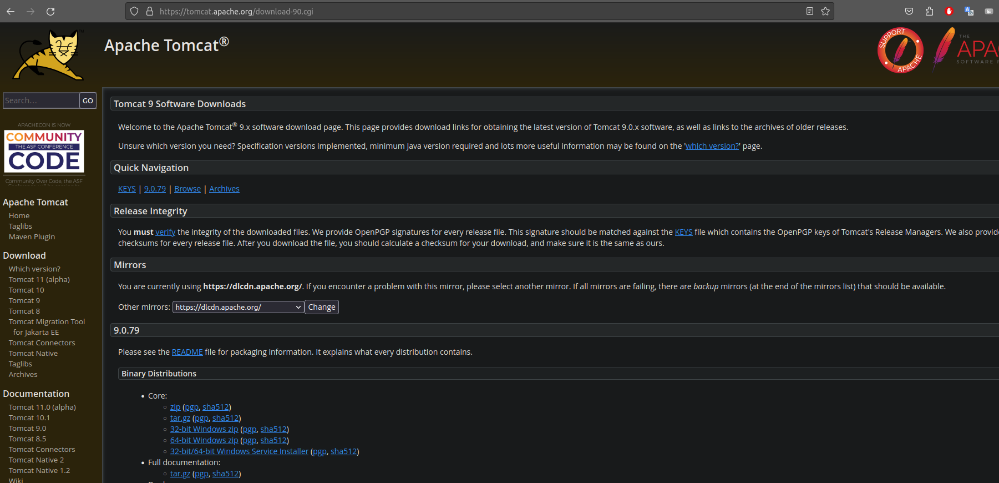Ahora vamos a seleccionar en Core el archivo tar.gz
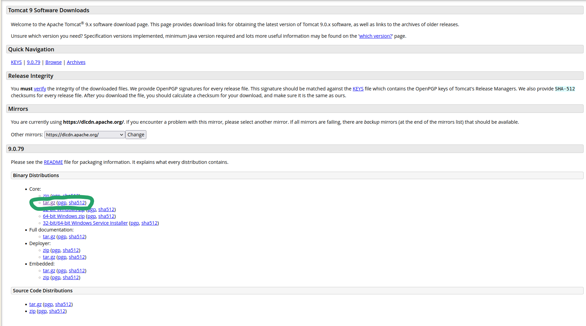Ahora el archivo que se descargo lo vamos a mover al directorio /opt/ y luego vamos a descomprimirlo ahi con los siguientes comandos
$ cd /opt/
$ sudo mv ~/Downloads/apache-tomcat-9.0.79.tar.gz ./
$ sudo tar -xzvf apache-tomcat-9.0.79.tar.gz
$ sudo rm apache-tomcat-9.0.79.tar.gz
Con esto vamos a moverlos al directorio /opt/ luego movemos el tomcat comprimido, lo descomprimimos y el ultimo paso es extra borramos el archivo comprimido.
Con esto tenemos instalado Apache Tomcat version 9
10 Actualizacion de CATALINA_HOME
Asi como actualizamos JAVA_HOME nosotros vamos a hacer lo mismo, para ello vamos a poner esta variable al final del archivo en:
$ sudo nano /etc/environment
Y crearemos CATALINA_HOME="/opt/apache-tomcat-9.0.79" y al final del path ponemos :/opt/apache-tomcat-9.0.79/bin.
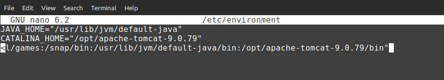Tambien seria bueno agregarlo en
$ sudo su
$ nano /root/.bashrc
11 Configuracion de tomcat user
Este paso es para que podamos acceder al manager dentro de la interfaz de nuestro tomcat. Para ello vamos a tener que abrir un archivo para ello vamos a ejecutar en la terminal los siguietes comandos.
$ sudo su
$ cd /opt/apache-tomcat-9.0.79/conf
$ nano tomcat-users.xml
ahora antes de la ultima linea vamos a agregar este usuario </tomcat-users>
< user username="admin" password="admin" roles="manager-gui,manager-script,manager-jmx,manager-status"/>
Lo que hicimos fue crear un usuario admin y password admin y con una serie de roles que nos permitiran hacer ciertas acciones cuando usemos por ejemplo netbeans
-
manager-gui : Permite el acceso a la GUI HTML y a las páginas de estado.
-
manager-script : Permite el acceso a la API HTTP y a las páginas de estado.
-
manager-jmx : Permite el acceso al proxy JMX y a las páginas de estado.
-
manager-status : Permite el acceso a las páginas de estado solamente.
Con esto ya tenemos nuestro Apache Tomcat casi listo.
12 Correr Apache Tomcat (sin JSTL)
Vamos a correr apache tomcat para ellos vamos a realizar los siguientes comandos:
$ sudo su
$ cd /opt/apache-tomcat-9.0.79/bin
$ ./startup.sh
Si te llega a dar un error similar al siguiente:
$ Cannot find /Users/user/tomcat/bin/setclasspath.sh This file is
needed to run this program.
Puede ser que tu CATALINA_HOME este mal seteado, verificar la version con tu apache tomcast instalado tienen que coincidir, fijarse si se arregla desde usuario root haciendo source /etc/environment. Lo mismo si te falla el JAVA_HOME
Si fue exitoso podremos abrir tomcat en la url:
Pagina inicio tomcatDeberias ver lo siguiente:
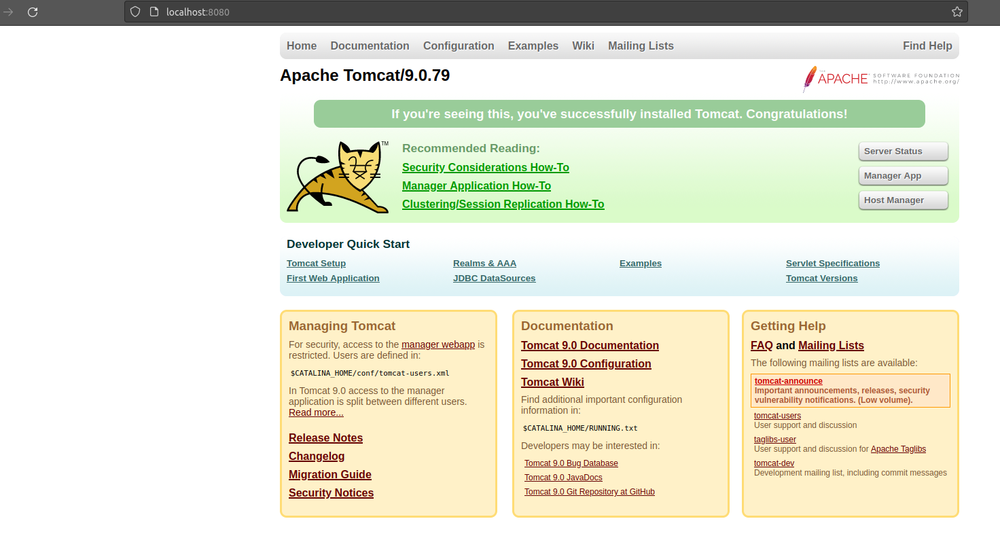Para poder subir una aplicacion, tenemos que ir a la derecha a la seccion manager app. Cuando le agamos click nos va a pedir username y password, las que pusimos en el pasos anterior. Ahora veremos una nueva interfaz:
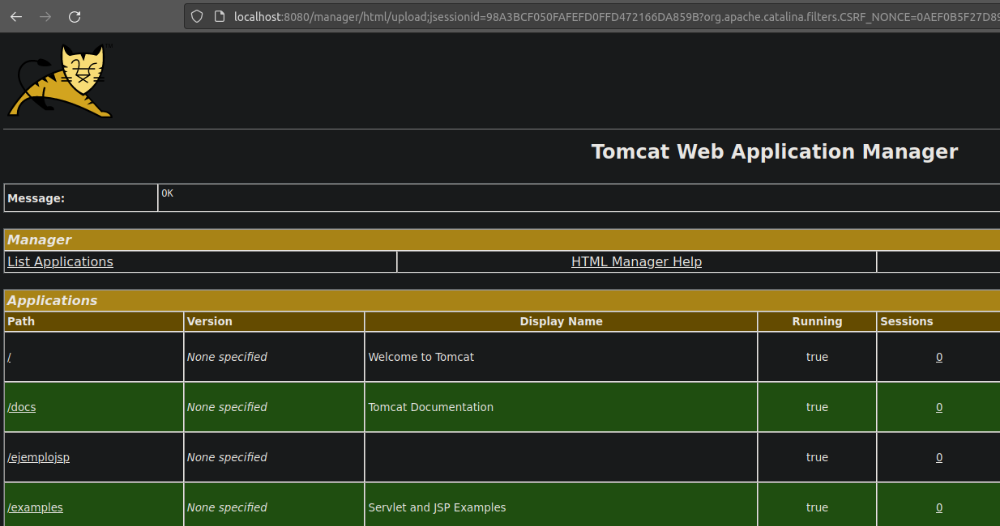13 Subir un war (sin JSTL)
Vamos a subir el war que nos dejo la catedra para eso podremos descargarlo desde aqui:
.war WEB IIY este .war lo vamos a subir a nuestro tomcat desde la interfaz de manager app en :
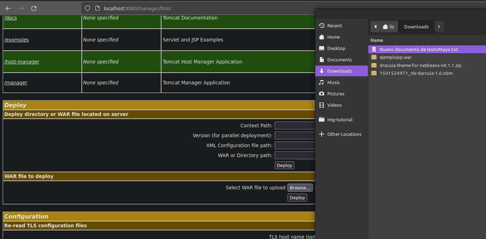Te va a pedir que elijas el archivo war que vas a subir y le tenemos dar a deploy. Con ello ya esta listo par apoder abrirlo ya que te mostrar como una entrar nueva de applicaciones del manager app.
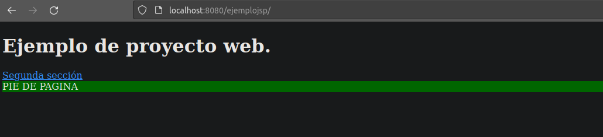14 Instalando JSTL en nuestro apache y proyecto
Lo primero que tenemos que hacer es descargar la libreria JSTL, la dejo aqui por si la necesitas a mano :
JSTLUna vez descargado vamos a este archivo ponerlo en WEB-INF de la applicacion ejemplosjsp y tambien apache en lib, asi que vamos a necesitar una copia de este.
$ sudo su
$ sudo mv ~/Downloads/jstl-1.2.jar
/opt/apache-tomcat-9.0.79/webapps/ejemplojsp/WEB-INF
$ sudo mv ~/Downloads/jstl-1.2.jar /opt/apache-tomcat-9.0.79/lib
Bien con ello ya tenemos todo listo, lo unico que queda hacer es reiniciar nuestro apache con los siguientes comandos:
$ sudo su
$ cd /opt/apache-tomcat-9.0.79/bin
$ ./shutdown.sh
$ ./startup.sh
Con ello ya podemos volver a ir a ver como quedo la app.